| Index Tutorials |
|
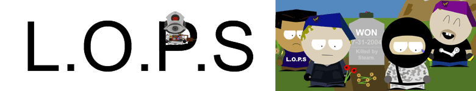 |
|
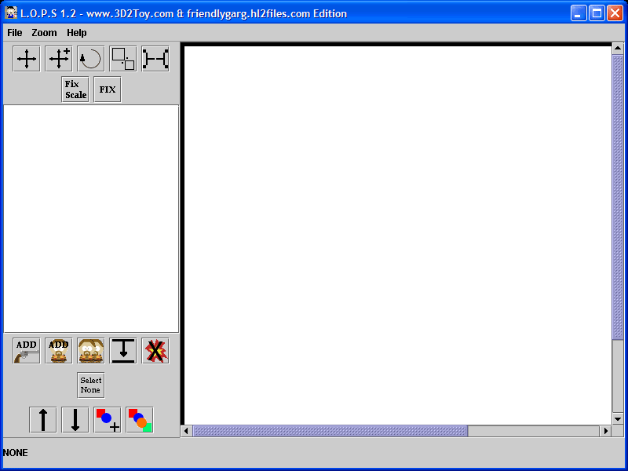 Welcome To L.O.P.S. The goal of this tutorial is to create a simple person and save them. 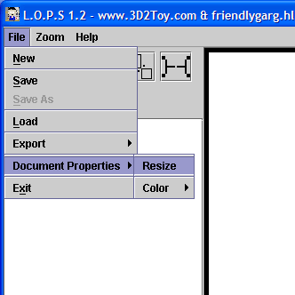 Before getting started on making a character we will need to resize the area. Click through File-Document Properties to Resize. When asked the width needs to be 300 and the height also needs to be 300. 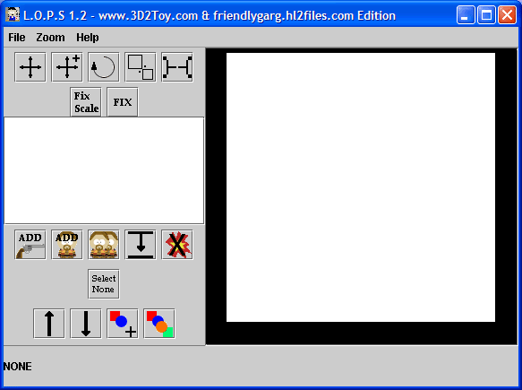 Now resize the window a bit. Theres no reason to have lots of blank space. 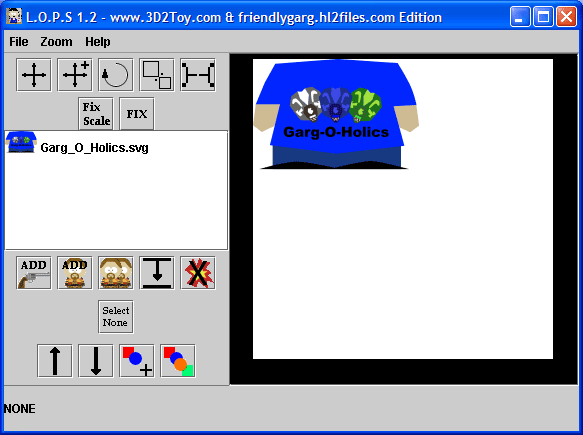 At this point we are going to start creating a person. Click on the 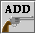 button. No go through the list and find Bodys->Garg_O_Holics.svg. Click OK to add the body to the main document area.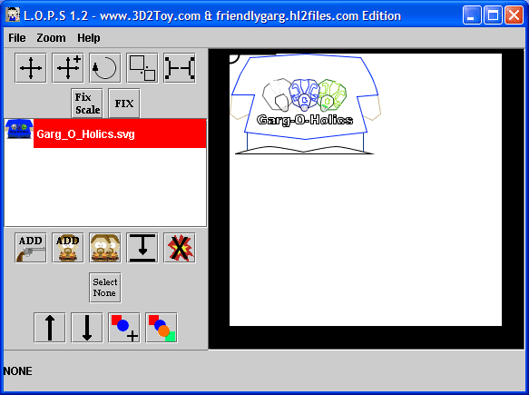 Now Click on the Garg_O_Holics.svg in the list to the side. Clicking objects in this list selects them. 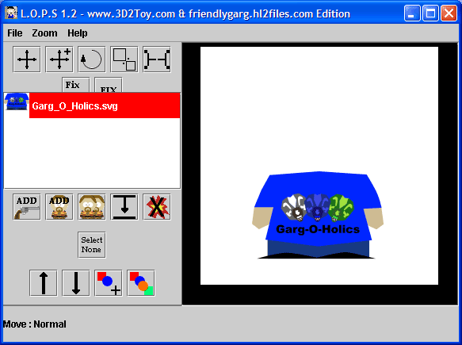 With the body selected click the button. Now we are in move mode. Note : If you look at the bottom left corner of the window the current tool is displayed. To move the body click and hold the mouse over the images area and start draging it around. Try placing it like it is in the picture. 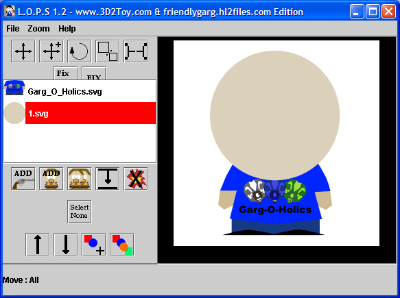 Now we are going to add a head. Click on the button. Find a head in the head foldr and add it. In the example I used 1.svg. Then move it to the correct spot. 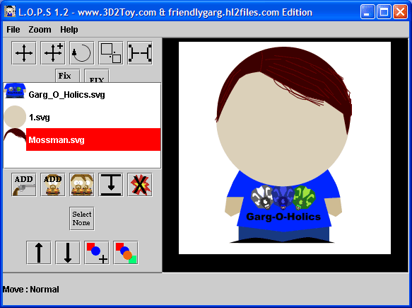 Now we are going to add a hair. Click on the button. Find some hair in the hair folder and add it. In the example I used Mossman.svg. Then move it to the correct spot. 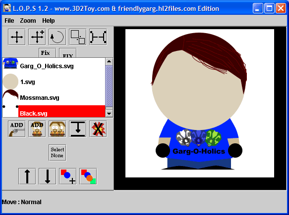 Now we are going to add a Hands. Click on the button. Find some hands in the hands folder and add it. In the example I used Black.svg. Then move it to the correct spot. 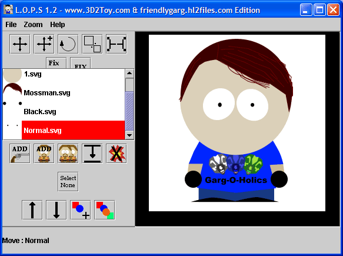 Now we are going to add a Eyes. Click on the button. Find some eyes in the hair folder and add it. In the example I used Normal.svg. Then move it to the correct spot. 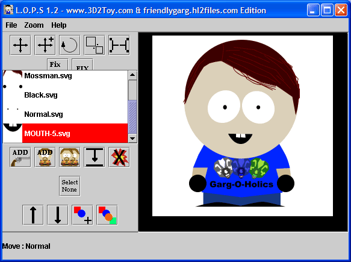 Now we are going to add a Mouth. Click on the button. Find some mouths in the mouth folder and add it. In the example I used Mouth-5.svg. Then move it to the correct spot. 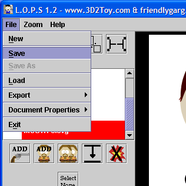 Now we are going to save you work. Click File->Save. 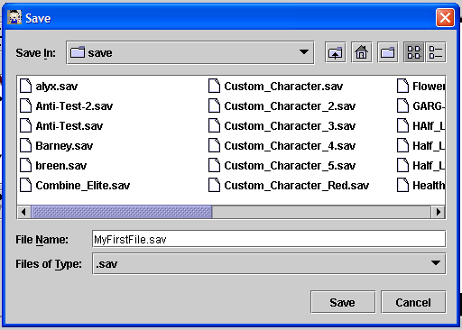 Give it the name MyFirstFile.sav and click save. |
| Copyright © 2005 SlashAndBurn. All rights reserved. |